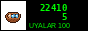

NEW!!! 08.2011 — Last meeting of summer, Saturday 23:00, parking of the Trade Centre on Azatlık. Who has sound, bring!!!
We are NZ STREET TUNING: young guys from Nurzhan who love cars and do everything with our hands. No money, but we have ideas!! Our cars are VAZ (2106, 2109, 2110, Priora), one Opel and one Mark II (the dream of everyone).
We meet on Friday and Saturday night. We do not race on city streets (police, we read this site too, hello :) only at the old airfield road when it is allowed.
NEWS:
08.2011 — Ruslan goes to the army in autumn. The site will wait.
05.2010 — Timur put 4 subwoofers in the 09. The glass is still alive.
10.2009 — Our 1st "Night of Lights" at the airfield: 14 cars, 200 people!!!
07.2008 — site opened. Visitors from Talas, Almaty and Bishkek, welcome!
